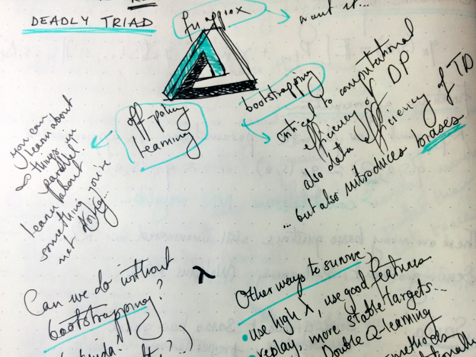
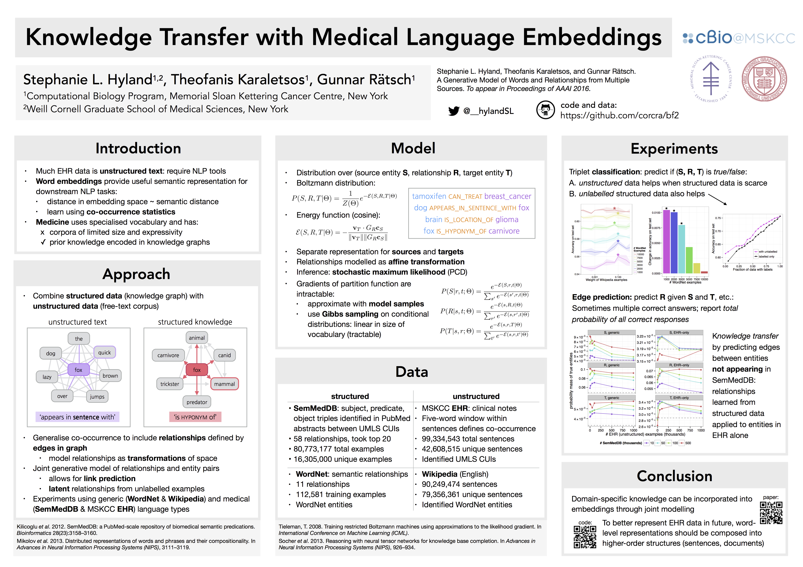

I got back from Montreal yesterday. I was at the Twenty-ninth Annual Conference on Neural Information Processing Systems (NIPS) - a rather large gathering of people interested in machine learning, neuroscience, artificial intelligence, and related topics. It's an academic conference, and it is intense. Many wonderful conversations were had, things learned, insights gained, ideas developed, coffees consumed. Old friends met and new friends made. I left physically exhausted, and this post is an attempt to summarise some of what went down. This was also my first time attending NIPS, so next time I might be a little more conservative with my energy.
If it seems like my level of detail varies wildly, it's because sometimes I took notes, sometimes I couldn't, and sometimes I didn't want to.
Sunday
When I flew from Dublin to Hamburg for 31C3 last year, the plane was full of vaguely unusual-looking people (myself included, no doubt) clearly destined for Congress. Who else would fly to Hamburg on St. Stephen's day? The flight from NYC to Montreal for NIPS was a little less homogeneous, and machine learners are harder to spot (posters are strong evidence), but I nonetheless had the same vague feeling of unified purpose with my co-passengers. Conversation about optimisation broke out on the bus to the city centre, and knowing glances were exchanged between strangers. And so NIPS began as it would continue, a bubble where the social convention of silence is broken by mutual knowledge of shared purpose (this purpose being bringing about the robot apocalypse).
Tip: don't try to register the day the conference starts. Angry Monday morning tweets mentioned waiting times some multiples of how long I spent on Sunday evening. ¯\_(ツ)_/¯
Monday
Because I forgot to register for the Women in Machine Learning workshop, I went to tutorials.
Deep Learning: Yoshua Bengio & Yann LeCun
Topics mentioned were: curse-of-dimensionality, backpropagation, convolutional nets, recurrent nets, details about backprop (e.g. with ReLUs and max pooling, GPUs), distributed training (e.g. asynchronous stochastic gradient descent), applications (eg. vision, more about vision, speech, natural language), attention mechanisms, encoder/decoder networks (e.g. for machine translation), multi-task learning, unsupervised learning, undirected graphical models, more about auto-encoders (e.g. probabilistic interpretation, helmholtz machines), semi-supervised learning (e.g. ladder networks), and some challenges and open problems. The future questions/areas of interest highlighted were:
- unsupervised learning, and how to evaluate it?
- how to include long-term dependencies?
- NLP, generally
- optimisation
- distributed training?
- bridging the gap to biology
- deep reinforcement learning
Overall, I wanted to see more gorey details, but deeper coverage of any one topic would have limited breadth, so it was more like a lit review/series of pointers to publications in this field. There was criticism that it placed too much attention on the work of its presenters (also Hinton, who was meant to be there but couldn't make it unfortunately), and gave an incomplete treatment of the history of the field. I'm not in a position to comment intelligently on that. Anyone giving an overview-style talk has a responsibility to adequately cover both history and breadth of research, so I can see why it might have been made.
Probabilistic Programming: Frank Wood
I had already heard some of this content at MLSS 2015 Tübingen so didn't take notes. Check out this repo for the material from the practicals on Anglican. TL;DR:
Goals of probabilistic programming: reduce coding burden, commodify inference, create weird new models, make it widely usable #NIPS2015
— Stephanie Hyland (@__hylandSL) December 7, 2015
Introduction to Reinforcement Learning with Function Approximation: Rich Sutton

I took physical notes for this tutorial, because there was a severe lack of power outlets in the convention centre. Tip: sometimes it's better to have a notebook with a long battery life than a retina screen.
I think reinforcement learning is really cool (and according to how popular the deep RL workshop was, so do other people (or maybe they just like 'deep')).
This tutorial was much more focused than deep learning: it was concerned with policy-learning through first getting an action-value function. This function gives you the expected reward (usually with discounting) upon taking a particular action from a particular state, and can therefore be used to define a policy (e.g., greedily, given your state choose the action with highest value).
He spoke about on- and off-policy learning, where the agent is obtaining information for its estimate of the action-value function while either following the policy given by such a function (on-policy) or some other policy (off-policy), such as a random policy. I hadn't properly appreciated the significance of this difference before, so I found the exposition illuminating. He gave an example where on-policy learning resulted in the highest average reward across episodes, but its learned policy was worse than that of an off-policy learner, since the off-policy learner was able to explore 'riskier' actions. My intuition here is that this result could be altered by tweaking rewards and the inclination towards exploration in the 'off' policy, and I'm sure there is loads of (ancient) work already done on the topic. More papers to read, eh.
Another neat thing about off-policy learning is that you can gather information about many potential policies simultaneously. This might seem 'trivially obvious' (exploration leads to information about the system and its rewards which enables policy-learning) but it is always reassuring to hear one's intuitions restated by an expert in the field.
Overall this was the most lecture-like of the tutorials and hopefully it will appear online soon, because it was well-paced, well-motivated and overall the most useful, even if it wasn't all-encompassing for reinforcement learning (it wasn't trying to be). Sutton is a good educator.
Poster Session 1
I did this session 'wrong'. I tried navigating through an impassable crowd of humans and coats and bags to peer at each poster and then decide if I wanted to hear more. Tip: do not do this. For everyone's sake.
Taming the Wild: A Unified Analysis of Hogwild-Style Algorithms- Christopher M. De Sa, Ce Zhang, Kunle Olukotun, Christopher Ré - I need more asynchronous SGD in my life. They look at the noise you get from asynchronous updates, derive some results and describe a lower-precision SGD algorithm. I am disproportionately likely to pay attention to posters/papers with cool titles.
A Theory of Decision Making Under Dynamic Context - Michael Shvartsman, Vaibhav Srivastava, Jonathan D. Cohen - Neuroscience! Decision making! I have apparently forgotten the main message of this poster, possibly because we rapidly started talking about psycholinguistics. The danger of NIPS is exhaustion through too many interesting conversations. Added bonus for this poster: he made it + code + paper available (see link).
Grammar as a Foreign Language - Oriol Vinyals, Łukasz Kaiser, Terry Koo, Slav Petrov, Ilya Sutskever, Geoffrey Hinton - by the time I made it to this poster the session was over so I didn't get to speak to any of the authors. Main idea: parsing with LSTM + attention! The 'foreign language' part comes in because it's sequence-to-sequence (sentence to linearised parse tree), which is typically found in machine translation settings.
Tuesday
I was unreasonably tired and questioned the wisdom of staying at a poster session until after midnight. Zoubin Ghahramani spoke about Probabilistic Machine Learning while I ate pastries with a fork in the overflow room. The overflow room would have been perfect if it had any power outlets in it. I've heard some variant of Zoubin's talk roughly twice already, thanks to MLSS 2015 and GPSS 2014, so I lost focus and probably missed something new and important. He mentioned probabilistic programming and the automatic statistician. One of the questions was about whether this (the automatic statistician) will replace machine learners : a terrible thought, and ironic for a discipline which (to some extent) aims to automate away many other jobs. The answer was (as you might expect, may have even given yourself); 'this will just make our jobs easier, allowing us to focus on more interesting problems'.
The talk after Zoubin was rather technical and about singular value decomposition. I missed some critical thread of understanding at the start (see missing focus) and sort of give up following, although I note that the speaker was just quite good, even if the topic is not directly relevant to me.
Spotlights as a concept are interesting, and their intended purpose is a little unclear to me. If the poster is personally relevant and interesting, I will (possibly) already know about it and go to it. If it's not relevant, a three-minute summary is unlikely to change my mind. The intended benefits I could imagine (for the presenters) are:
- convincing other members of your field that your poster is interesting/worthwhile
- convincing people from outside your area that your poster is relevant
However, each of these necessitates a very different three-minute presentation (detailed versus high-level), and it's hard to say what the presenters went with. Further possible benefit:
- be able to state that one's poster was selected for highlight
In which case, the audience need not pay any attention. This is another way of saying that while I did listen, most of the spotlighted posters didn't make it into my cut for later. However, the final benefit (for the audience) was appreciated:
- exposure to entirely different sub-field and its different priorities and problems
I spent much of the afternoon charging my laptop in a corner of the convention centre and doing some work, so there are some deleted scenes from the conference here. I got an especially foul latte and suffered it for too long. What sort of monster uses artificial sweetener without asking first?
Poster Session 2:
New poster session policy: consult conference book, select posters, target.
Deep Generative Image Models using a Laplacian Pyramid of Adversarial Networks - Emily Denton, Soumith Chintala, Arthur Szlam, Rob Fergus - Emily Denton was part of the way into an explanation of adversarial networks when I arrived at this poster. I feel like I've heard a lot about them in recent days, but it's probably just the Baader-Meinhof phenomenon. I like the idea, although I feel like there's probably a way to show that the procedure is equivalent to some other contrastive objective or falls out naturally from an appropriate model choice, but these idle thoughts are better substantiated later/elsewhere/in prior art.
Expressing an Image Stream with a Sequence of Natural Sentences - Cesc C. Park, Gunhee Kim - fairly complicated deep network architecture, the idea is to create a reasonable-looking set of sentences to describe a sequence of images. Training data is blog posts containing pictures, assumed related (they break it into image/text-block segments). Some possibly-interesting pre-processing on the text data (I am biased to find text more interesting than images!), too.
Interactive Control of Diverse Complex Characters with Neural Networks -Igor Mordatch, Kendall Lowrey, Galen Andrew, Zoran Popović, Emanuel Todorov - using a recurrent neural network to learn the dynamics under a control policy; seemingly mapping from the state to the velocities (dynamics) caused by an action.
Efficient Learning of Continuous-Time Hidden Markov Models for Disease Progression - Yu-Ying Liu, Shuang Li, Fuxin Li, Le Song, James M. Rehg - a medically-focused paper! The advance seems to be making continuous-time HMMs more feasible. How much? I'm not sure, I didn't stay too long.
Asynchronous Parallel Stochastic Gradient for Nonconvex Optimization - Xiangru Lian, Yijun Huang, Yuncheng Li, Ji Liu - this is a theory paper about asynchronous SGD. I was initially confused because I didn't know the state of the theory here, and wasn't sure what their actual contribution was. The contribution is about the convergence rate. The take-home for me is roughly 'you can use asynchronous SGD'. See also the poster from Monday on Hogwild!.
Wednesday
I missed Tibhshirani's talk, Post-selection Inference for Forward Stepwise Rregression, Lasso and other Adaptive Statistical Procedures. This was unfortunate given the topic of lunchtime discussion was adaptive statistical procedures (among other things). Being interdisciplinary is interesting: I can simultaneously observe biology's obsession with p-values and machine learning's apparent lack of interest (to generalise wildly). I am not sure how many papers demonstrate statistically significant improvement over state-of-the-art, and while I should back up this speculation with reality, at the present moment (1:19am on Thursday) I'll say 'not many' and leave a generic pointer to Gelman's paper The garden of forking paths: Why multiple comparisons can be a problem, even when there is no “fishing expedition” or “p-hacking” and the research hypothesis was posited ahead of time.
Some of the talks/spotlights ended up being poster picks of mine, so I'll describe them below.
I was strangely entranced by Efficient Exact Gradient Update for training Deep Networks with Very Large Sparse Targets. I have a soft spot for linear algebra tricks. The idea is basically that when you have a very large, but sparse target - as you might get in a language modelling task (trying to predict which of O(100,000) words comes next) - you can do smart things to obtain gradients without actually calculating the horrible non-sparse, high-dimensional output. Lovely. The problem is that this only works for certain classes of loss functions, not including the traditional log softmax one sees in these language applications. So possibly limited benefit, but worthy of further investigation.
Poster Session 3
Refining the poster-session policy, I made it to too many posters and fried my brain.
Deep Visual Analogy Making - Scott E. Reed, Yi Zhang, Yuting Zhang, Honglak Lee - this was a full oral presentation so the poster was crowded. Oh, to be tall. Analogy idea: A 'is to' B as C 'is to' D, given (or simultaneously with) representations of A, ..., D, what does 'is to' mean? Oft-cited example from language modelling is the 'king is to queen as man is to woman' example (from word2vec) where 'is to' is apparently a constant offset vector in the representation space (which is a vector space). This is a very general problem and one I could rant about for quite a long time (indeed, I have a paper on a related topic) so I'll say that the new thing here seems to be the application to images, and nice results/experiments... and probably other details that will only emerge when I read the paper. Cool bonus: they used free (as in Free) game art from the Liberated Pixel Cup.
Training Very Deep Networks - Rupesh K. Srivastava, Klaus Greff, Juergen Schmidhuber - (disclosure: Rupesh and Klaus are friends of mine) Deeper networks are more better, but training them is hard (vanishing gradients and whatnot) - what to do? Highway networks tackle this by putting gates on layers, choosing between 'transporting' and 'transforming' data. Transporting is just an identity operation and therefore doesn't complicate gradients at all. There are (probably very obvious, for those who know LSTMs) connections to LSTMs here also. Keeping in line wih Klaus's Kubrik-inspired paper titles (previous ones being A Clockwork RNN) and LSTM: A Search Space Odyssey) I'd suggest 'Highway Networks or: How I Learned to Stop Worrying and Transport the Data', but admit further work is needed in this direction.
End-to-end Memory Networks - Sainbayar Sukhbaatar, arthur szlam, Jason Weston, Rob Fergus - continuous extension of memory networks, thus can be trained end-to-end (that is, without direct supervision at each layer, just from input-output pairs). The basic idea of a memory network is that you have some memory component (surprisingly enough) which the model learns to read and write to. Obvious applications is question-answering: feed it some text describing a scene, situation etc., then ask questions. I wondered how difficult these tasks could become before the methods started to break down and suggested (I think it was to szlam) that the GRE logic puzzles might be interesting for that, but alas, restricted-access data. One of many reasons we cannot have nice things.
On-the-job Learning with Bayesian Decision Theory - Keenon Werling, Arun Tejasvi Chaganty, Percy S. Liang, Christopher D. Manning - humans are quite good at tasks you might want an algorithm to perform, but employing humans is expensive (in many ways). Algorithms scale much better in this regard, but they have unacceptably bad performance until they've seen enough data. Solution: combine both. Get the algorithm to assess its certainty on the task, and ask for help when it needs it (using Amazon Mechanical Turk). Seems quite cool/useful, although I have some Complicated Feelings about turking (is it fine? is it creepy? is it exploitative somehow?).
A Framework for Individualising Predictions of Disease Trajectories by Exploiting Multi-Resolution Structure - Peter Schulam, Suchi Saria - carefully constructed hierarchical model of disease trajectory to identify patient subgroups. In particular, using a noise model (gaussian process with particular kernel choice) which allows for transient trends such as infection, medication etc. I think the disease severity is measured by lung capacity, so it's a 1-dimensional state space (although patients have covariates etc.), but I don't see any reason why a similar model couldn't handle other state-spaces. It makes for nice graphs, anyway. I'm glad to see probabilistic graphical models for healthcare represented at NIPS.
Thursday
Some last minute poster-printing shenanigans occupied the morning. For future reference: Copie Nova printed my A1 poster in 15 minutes.
Poster Session 4
Update to policy: bump into a friend, end up chatting about twitter bots and other side projects. Miss half the poster session.
Semi-supervised Sequence Learning - Andrew M. Dai, Quoc V. Le - I marked this and have no memory of actually reading the poster. I suspect it was mobbed and I gave up. Things in the direction of unsupervised learning are interesting, so the paper is probably interesting.
Skip-Thought Vectors - Ryan Kiros, Yukun Zhu, Ruslan R. Salakhutdinov, Richard Zemel, Raquel Urtasun, Antonio Torralba, Sanja Fidler - this is the only paper I had already read before coming to the conference, so it was neat to get to talk to Kiros about it briefly! The idea is basically: as in word2vec, you learn a representation of 'meaning' by trying to predict context. This time, the prediction is of the preceding and subsequent sentences, using RNN encoders/decoders. They also use an interesting trick to augment their underlying word representations by learning a mapping from pre-trained word2vec vectors into their mapping space. This allows for any word2vec-learned word to be used in their setup. I was surprised that this worked well, since the problem should be over-determined (they solve this approximately with a L2 loss, but still). The title is also very eye-catching (the term was coined by Hinton, according to Kiros), although I think we're still a ways away from actually representing thoughts. Sentences are closer than words, but are they close enough?
Symposium: Algorithms Among Us: the Societal Impacts of Machine Learning
I am so excited to see the field talking about this. It is very easy as a scientist to divorce oneself from the social, ethical, economic etc. consequences of one's work. I was glad to see a large crowd turn out to this, although there's certainly an element of 'self preservation' here - that is, how do we make sure machine learning (and artificial intelligence) retains a positive status in the eyes of everyone else, and some element of sensationalism regarding 'scary killer robots of the future' (aka 'the children of the singularity are going to murder us all and something about Roko's basilisk'). Nonetheless, cool discussions were had.
Economic Issues
Erik Brynjolfsson spoke about the Economic Implications of Machine Intelligence. He was proposing that we are in a 'second machine age'; where previously machines were used to replace physical power (as in the industrial revolution), we now see computers providing mental power, which possibly threatens not to complement humans but replace us. This has implications for the economy (what doesn't?). He showed some graphs about income trends in the USA, which were (as usual) horrifying and enraging. It's uncertain how we can use machine learning to combat this without simultaneously bringing about other changes in society/the economy.
Legal Issues
Ian Kerr spoke about Machine Learning and the Law, which was fascinating. Question: can computers make contracts? Apparently yes! What about product liability? The manufacturer is usually responsible if there's a defect in a product, but what if your autonomous vehicle drives into a wall to save a small child? It's doing what it was programmed to do - who's to blame? On that point, should it do that? He mentions volenti non fit injuria, that people who enter into risky activities should assume the risk (and entering a self-driving car is a risky activity, arguably). More questions: how much faith should we put in the output of an algorithm? What if an automated medical diagnosis disagrees with a human? Who do we trust? There are questions of both moral and legal liability. If your instinct is to respond with 'trust the human, of course' - what if the algorithm's track record is provably much better than that of the human?
Panel on Near-Term Issues
(with Tom Dietterich, Ian Kerr, Erik Brynjolfsson, Finale Doshi-Velez, Neil Lawrence, Cynthia Dwork.)
I didn't write down who said what, so to anonymously summarise some of the points raised:
- the philosophical problems (e.g. trolley/tunnel problem) aren't so clear-cut, because there is uncertainty and also split-second decision-making which may render 'consulting the human driver' an untenable option.
- re: people losing jobs to automation: this has been happening for a long time, but that doesn't necessarily make it acceptable. However, arbitrarily banning/regulating things is also not desirable. Both under and over regulation are possibly dangerous.
- we should look for ways that AI can enhance human capabilities, rather than trying to replicate it - this might result in very different-looking research and outcomes.
- sometimes there just isn't a right answer because we don't know what the objective function is (particularly in ethics), and encoding a single system of values maybe a fool's errand. (I'm reasonably confident Neil Lawrence said this.)
- counter-point to the above: robust loss functions exist to allow us to optimise a possibly-misspecified objective function.
- we are actually already quite forgiving of (human) mistakes in medicine!
- skill/income gap: what about developing countries? Someone pointed out that China has moved to a higher-income country, but mostly by doing the low-skilled labour no longer performed in The West.
Panel: Human-level AI... If, How, and When?
(with Yann LeCun, Andrew Ng, Gary Marcus, Shane Legg, Tom Dietterich)
More semi-anonymous points:
- obviously artificial general intelligence (AGI) is a crude concept, but it's still useful... "I'll know it when I see it."
- generality is the main difference between task-oriented algorithms and AGI, but maybe human-level AGI is not so important.
- reasons to pursuse AGI include better understanding human intelligence, and other questions of psychology.
- someone questions how useful AGI is to society, as individualised systems already work very well.
- counter-point to above: hand-crafted systems are being outperformed in some tasks by 'less engineered' ones.
- quote from Andrew Ng: "working on AGI today is like working on colonising Alpha Centauri", although he isn't opposed to other people working on it.
- LeCun emphasises the importance of unsupervised learning for approaching more intelligent machines.
- Ng says that seeing into the future is hard if not impossible, and reiterates the importance of unsupervised learning for progress.
- re: self-driving cars: Ng suggests starting with vehicles autonomous on specific routes, and then expanding their range of activity, rather than starting with an everywhere-driving car which increases in autonomy.
- "AGI will not be an event. It won't happen instantaneously. We will add capabilities. The hardware matters. Much of our meta-reasoning is about resource allocation. Different hardware infrastructures will lead to different trade-offs. We will see systems with different strengths and weaknesses to humans."
- minor counter-point to above: maybe in the future, the point at which computers can read open-ended general-domain texts will be regarded as 'the turning point'
- Ng: (paraphrasing): "Forming a committee about evil AI robots is like worrying about overpopulation on Mars."
- LeCun: (approximately, my live-transcription has a non-zero error-rate): "We like to think of our mind as being a generally intelligent machine, but our brains are very very far from being general. We’re driven by basic instincts built into us by evolution for survival, our brains are very limited in their types of connections and functions/signals they can process/compute efficiently. We’re very slow at adding numbers together… it’s very difficult for us to imagine a different type of intelligence than human intelligence, because that’s the only example we have in front of us. Machines will look very different. They won’t have the drives which cause humans to do bad things to each other."
Friday (Workshop on Machine Learning in Healthcare)
This is technically how I was at NIPS, I was presenting a poster (and I got travel funding).

To my eternal shame and regret, I missed everything before the first poster session. I hope the talks will be online soon, because they sounded great:
- Integrating Artificial Intelligence into Emergency Care - Steven Horng
- Data-driven Phenotyping of Autism Spectrum Disorders - Finale Doshi Velez
- Behavioral Analytics in Mental Health Care - Gourab De
I also accidentaly double-presented my poster, so didn't have time to thoroughly examine work from others.
Rich Caruana spoke about Accuracy on the test set is not enough --- the risk of deploying unintelligible models in healthcare: interpretability is important in healthcare! He gave an example of a rule-based model which, upon inspection, revealed that asthma appeared to predict better outcomes for pneumonia patients. Further reflection yielded the explanation that such patients are more closely monitored and may go to the hospital earlier/more often.
This reminds me of a lesson from my biostatistics class during Part III: from an entirely unspecified population, the information that a given individual has a diagnosis of breast cancer improves their life expectancy relative to the population at large. Why? Such a diagnosis means:
- patient is likely female
- patient is from a country with breast cancer screening programs
... both of which improve one's life expectancy relative to global average. Couple this with reasonable-ish outcomes for breast cancer diagnoses and you have the seemingly counter-intuitive result. The lesson is to always be vigilant (for confounders).
Nigam Shah spoke about Building [Machine] Learning Healthcare Systems. Apparently 91% of the increase in healthcare costs in the USA is attributable to price increases, and not specific services or ageing. Citation required, obviously, but I didn't take it down. He spent some time discussing how existing data sources (EHRs, clinical trials, chemical databases, health forums, physician query logs, PubMed) can be used to do three things (this is probably an overview of the work done in his lab):
- answer clinical questions, e.g. does androgen therapy for prostate cancer influence risk of Alzheimer's, also as a function of age?
- obtain insights from data, e.g. here's a pile of data, tell me something I don't know
- form predictive models, e.g.
- which patients will become expensive next year?
- which patients have wounds that won't heal?
- which patients may have latent diseases?
There were several contributed talks. My favourite was from Charles C. Onu about detecting asphyxia from a baby's cry. Problem setting: asphyxia in newborns is potentially fatal or debilitating, but typical clinical diagnosis requires resources which are not always available (e.g. in rural locations in Nigeria). It turns out that babies with asphyxia cry in a detectably different way. So he developed the tools (signal processing, classification) and an app to do this on smartphones (high penetration even in low-resource settings). This is one of the coolest applications of machine learning I've heard of, and it didn't require deep learning. He won the prize for best contribution, and deservedly so. This should be a reminder that impact comes from solving important problems, not (necessarily) using high-tech solutions.
Ambuj Tewari spoke about Personalised mHealth. I find this stuff really fascinating (and wish I had any spare time to work on it - all my spare time is occupied by lasers right now). He motivated the issue by pointing out the dire state of mental health care in India: apparently there are 343 clinical psychologists (in the country?), out of a required 13,259, and 290 psycho-social workers out of 19,064. Clearly, anything technology can do to bridge this gap is huge. He pointed out that since smartphone penetration is very high, mHealth has a lot of potential. Then my laptop battery died.
The rough idea is to use reinforcement learning and expertise from human-computer interaction to devise apps which encourage behaviour modification in their users. This idea is a little terrifying when you think of malicious actors (encouraging addiction to pay-per-use services/games for example), but their intentions here were noble (so the tech will never be misused, right?). The stated application was fitness for people at risk of heart disease, if I recall. Finding the right balance of push/pull notifications (including frequency and number) is important to encourage persistent engagement. I'm particularly excited for mHealth applications to mental health, especially for self-monitoring and anomaly-detection. These things already exist to an extent, but I'm not sure how much they rely on machine learning.
Saturday (Reasoning, Attention and Memory Workshop)
This workshop was very crowded, and I was only able to get a seat for the first session, so my notes are terrible/missing. The slides are on the workshop page, anyway, so I'm going to substitute an actual overview of this workshop with the following set of bad jokes:
No regrets.
Workshop bonus: free icecream.
Conclusion
There are a lot of smart people working on a lot of interesting problems. Industry interest in machine learning is very high, and it is possible to do research outside of academia. (This is a curiosity for a former theoretical physicist.) The deep learning wave is possibly cresting, although deep reinforcement learning seems to be pretty hot. Models including memory are exciting and potentially very powerful, for performance on standard tasks and for (the non-orthogonal problem of) modelling reasoning. Unsupervised learning is the future. Healthcare is clearly a wonderful match for interpretable models, both as an application and a source of inspiration for theoretical development (cf. complex analysis and physics). The community is vibrant (if hilariously gender-imbalanced), and I'm looking forward to next year.